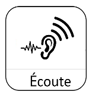
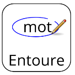
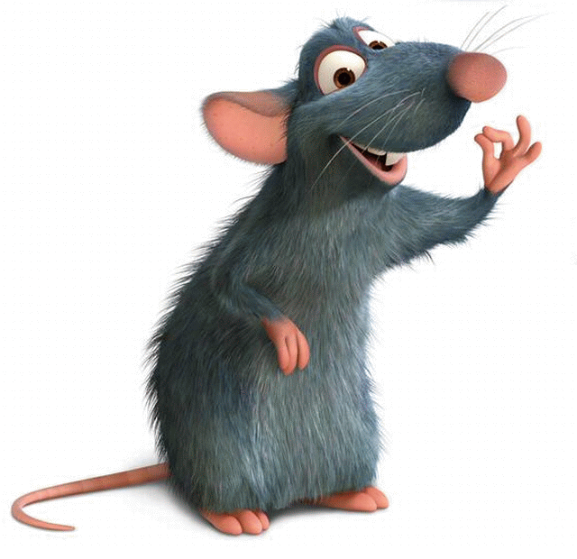
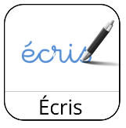
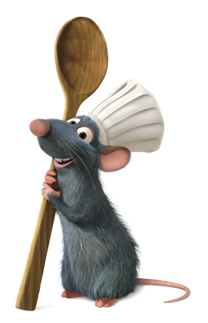
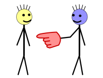
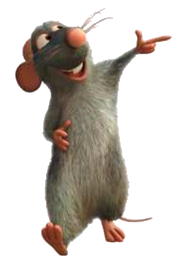

ME PRÉSENTER — SÉANCES 1 ET 2
{{ aide }}
PAGES À IMPRIMER
À PROJETER
AIDE À L'ÉCRIT
Bonjour !
OU
{{ m }}
U
{{ m }}
{{ n }}
{{ l }}
Et toi ?
{{ dStructure }}
{{ x }}
{{ r }}
{{ dRang }} · {{ dNom }}
Les flèches du clavier changent de diapositive.
FICHE DE PRÉPARATION
{{ prepTitre }}
{{ prepSous }}
{{ l.cle }}
{{ l.val }}
DÉROULEMENT
{{ p.num }}
{{ p.titre }}
{{ p.duree }} · {{ p.modalite }}
{{ p.quoi }}
Pourquoi / vigilance — {{ p.pourquoi }}
MATÉRIEL À PRÉPARER
• {{ m }}
DIAPORAMA
{{ d }}
ME PRÉSENTER — 1
Prénom : ______________________

1. Écoutez. Répétez.
OU
{{ m }}
U
{{ m }}

Entourez le mot que vous entendez.
2. Mon prénom

Bonjour !
Je m'appelle Rémi.
Et toi ?
Je m'appelle Rémi.
Et toi ?
JE M'APPELLE + prénom

3. Mon métier

Je suis cuisinier.
Et toi ?
Et toi ?
JE SUIS + métier

4. Demandez à un camarade.
ME PRÉSENTER — 2
Prénom : ______________________
1. Je me souviens.
2. Mon pays
JE VIENS D' + pays
Je viens d'Afghanistan.
Je viens d'Égypte.
Je viens d'Angola.
3. Ma ville
J'habite à Paris.
Et toi ?
Et toi ?
J'HABITE + à Paris / au Havre
4. Écoutez. Répétez.
{{ n }}
5. Mon âge

J'ai 18 ans.
Et toi ?
Et toi ?
J'ai 50 ans.
J'AI + nombre + ANS
6. Demandez à un camarade.